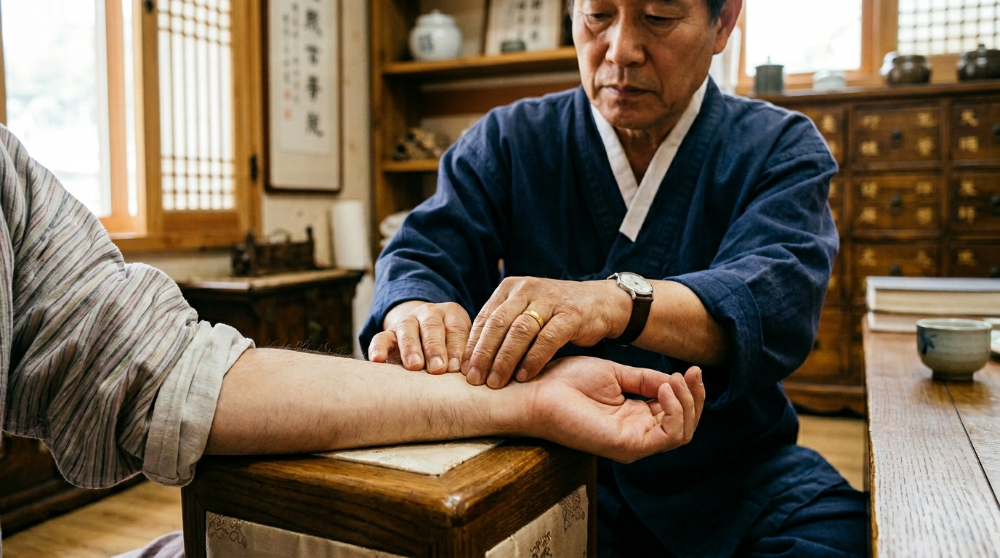
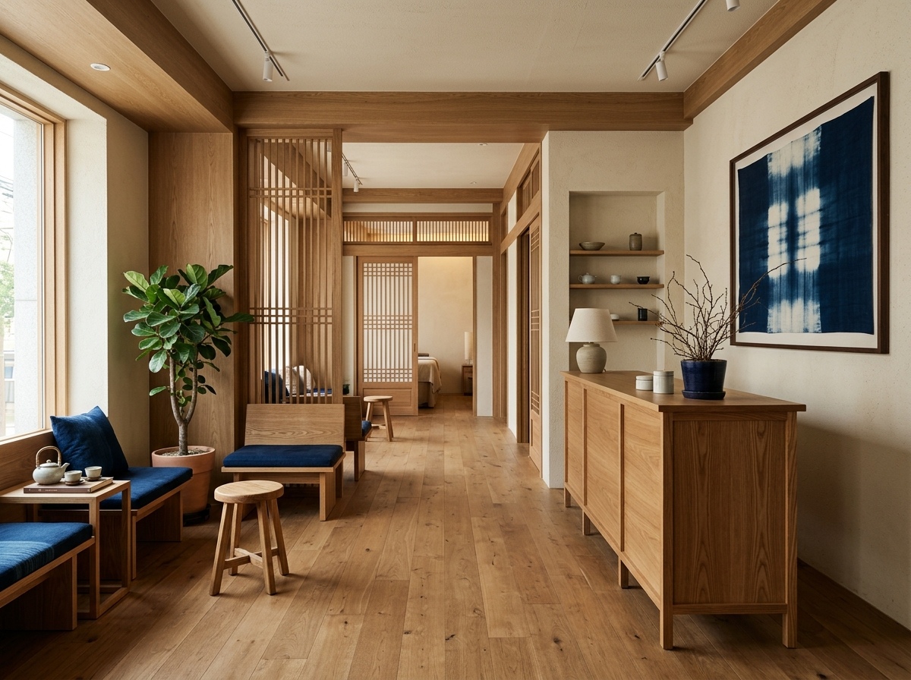
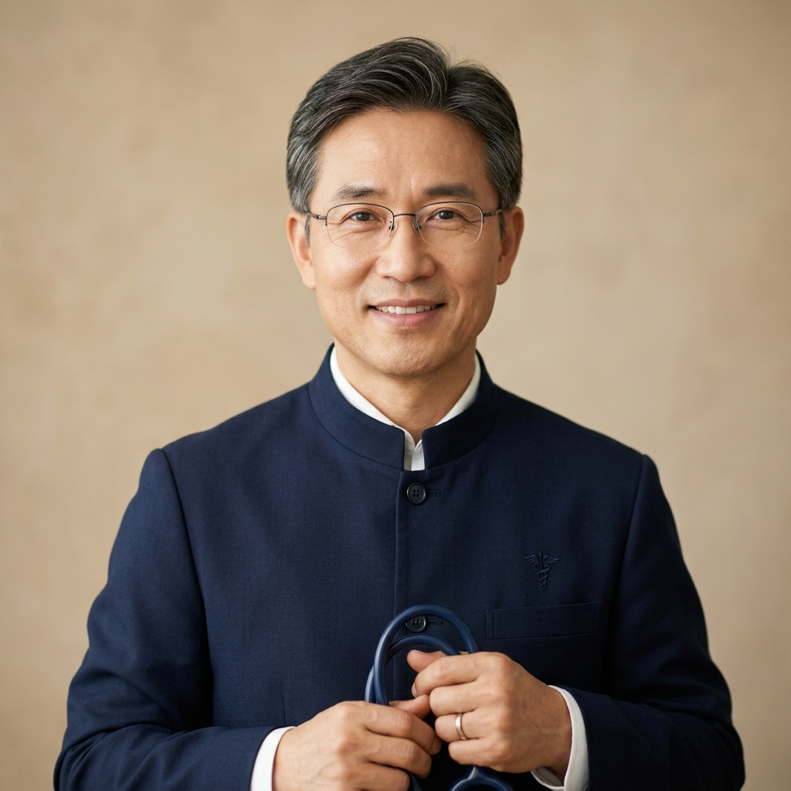

체질 진단
맥진·설진·문진을 종합한 정밀 체질 진단을 제공합니다.
상담 문의 →
한의원 소개
쿠마한의원은 증상 완화에 그치지 않고 체질 진단을 통해 원인을 파악합니다. 모든 처방은 개인 체질과 생활 패턴을 반영해 맞춤으로 설계됩니다.

의료진 소개
"증상이 아니라 사람을 봅니다. 체질을 알면 치료의 방향이 분명해집니다."
자주 묻는 질문
맥진, 설진, 문진을 종합해 체질을 판단하며, 필요한 경우 체성분·자율신경 검사를 함께 진행해 정확도를 높입니다.
증상과 체질에 따라 다르며 보통 1~3개월 단위로 처방하고, 경과를 보며 조정합니다.
개인차가 있으나 대부분 가벼운 자극 정도로 느껴지며, 시술 부위와 강도는 상담을 통해 조절합니다.
상담 문의
상담 내용은 외부에 공유되지 않으며, 한의사가 직접 회신드립니다.
전화 02-5678-1234
주소 서울 강남구 도곡로 89
진료시간 월~토 09:30–19:30